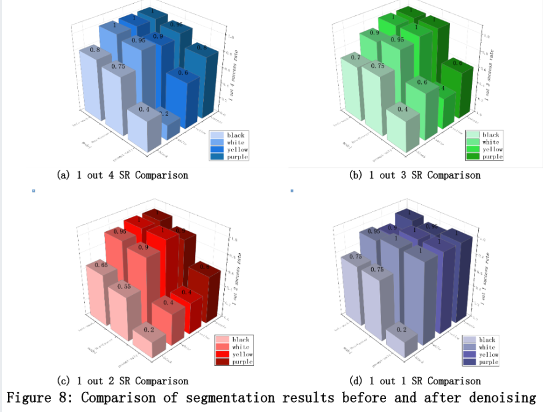
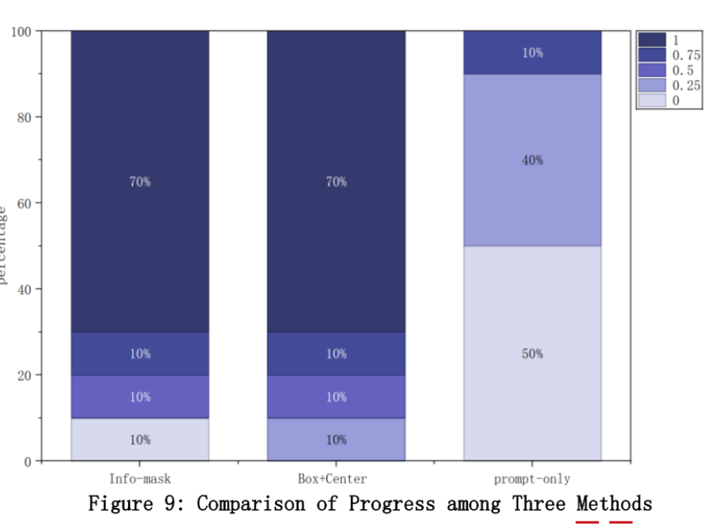
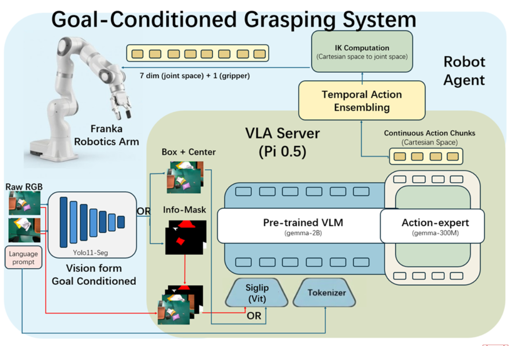

Project Demo
Goal-Conditioned VLA based on pi_0.5
Developed a goal-conditioned robotic grasping system combining YOLO11-Seg with the pi_0.5 VLA model. Resolved the VLA model's high sensitivity to text prompts by introducing an explicit visual anchoring mechanism, significantly boosting grasping reliability on a physical FR3 robot.
roboticsvlagrasping
2025.09 - 2025.12
YOLO11-Seg + pi_0.5 VLA
Physical FR3 Robot
Results
Segmentation and Progress Comparison


System
Goal-Conditioned Grasping System Architecture
